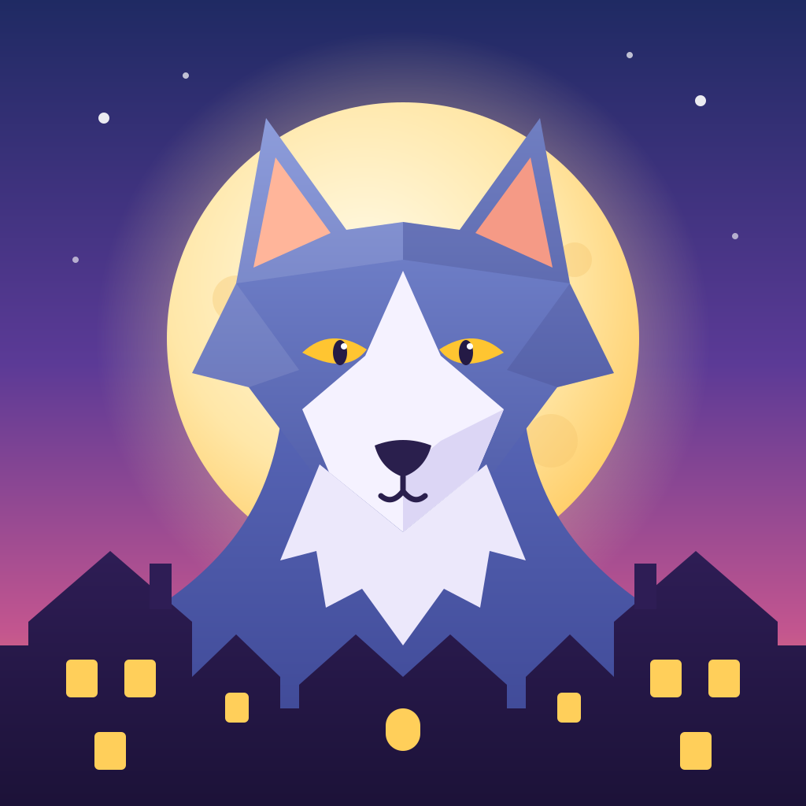

Gather your village.
Someone isn't human.
Talk, bluff and vote by day. Act in secret by night. Werewolf Town is a free, real-time werewolf game with fifteen roles, secret wolf-pack chat, and a living town square where every lynching plays out in front of you.
Free to play · Android & iOS releases coming — see the roadmap. The browser version may take ~30 seconds to wake on first load.

One village. Three phases. A lot of lying.
Every match cycles between night and day until one side has nothing left to fear.
🌙 Night
The village sleeps. Wolves pick a victim together, the Seer looks into a soul, the Guardian Angel shields someone. Everyone with an ability acts in secret.
☀️ Day
Dawn reveals who survived. Argue, accuse, defend yourself. Detectives and Gunners can act in the open — at a price.
⚖️ Trial
The village votes someone to the gallows. Mayors count double. If you get it wrong, the wolves are one step closer to winning.
More than a card game with a chat box.
A living town square
Villagers walk home at night, gather for trials at dusk, and the gallows do their grim work in full view. Tap an avatar to vote, tap a cabin to act.
Real channel secrecy
Village, Wolf Pack and Graveyard chats are separated server-side. The dead can't leak, and wolves can't be overheard.
Roles that bend the game
Lovers who die of grief, a Tanner who wants to be lynched, a Cursed villager who may turn wolf. Every match has a different shape.
Quick-join or host your own
Jump into a public village in one tap, or build a custom one with curated role presets, your own theme and morning lore.
Play with people you trust
Friends, invites and live presence — plus blocking, in-game reporting and moderation built in from the start.
Recap stories
After each match you get a chronicle of the turning points and an MVP. Share the best betrayals with your friends.
Fifteen roles at launch.
A 40-role roster is planned. These are the ones you can play today.
Villager
No special power — just your voice and your vote.
Seer
Each night, see a chosen player's real role.
Detective
By day, reveal a player's role — but it may expose you to the wolves.
Guardian Angel
Shield someone from a kill each night. Guard a wolf and you might die instead.
Hunter
If you fall, take someone down with you.
Gunner
Two bullets. Shoot a player publicly by day.
Mayor
Reveal yourself and your vote counts double.
Mason
You know who the other Masons are.
Cursed
An ordinary villager — until the wolves choose you, and you turn.
Wolf
Each night the pack jointly picks one victim.
Alpha Wolf
Pack leader. The pack's victim may be turned into a wolf.
Traitor
A hidden villager who becomes a wolf once all the real wolves are dead.
Tanner
You win if the village lynches you.
Cupid
Bind two players in love — if one dies, the other dies of grief.
Serial Killer
Kill one player every night. Win as the last one standing.
Where we are.
- Done
Core game
Fifteen-role engine, real-time chat with channel secrecy, friends and matchmaking, moderation tools, and the animated town square.
- In progress
Friends playtest
Closed testing with small groups, collecting bugs and balance feedback.
- Next
Store launch
Google Play and App Store releases, with store listing, screenshots and privacy tooling.
- Planned
More roles & stories
Expanding towards a 40-role roster and richer village customisation.
Ready to find the wolves?
Grab a few friends, open the link, and start a village in under a minute.